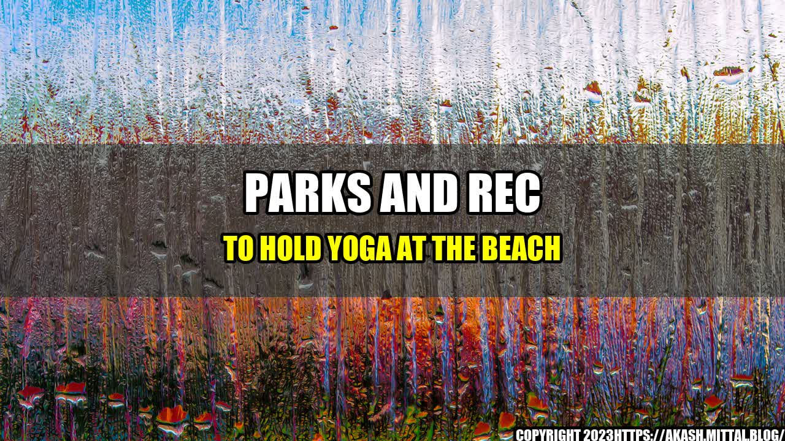

Parks and Rec to Hold Yoga at the Beach

Relax and Unwind While Practicing Yoga on the Beach in Bemidji
Are you looking to trade your yoga mat for a sandy beach? You're in luck! The Parks and Rec department of Bemidji is teaming up with local yoga instructors to offer a new refreshing yoga class on the beach!
The serene beauty of the beach coupled with the calming and strengthening effects of yoga are sure to make for an unparalleled experience. This exciting new offering is sure to be a hit with yoga enthusiasts and beachgoers alike!
The Benefits of Beach Yoga
- Stress Relief: Practicing yoga anywhere can have significant physical and psychological benefits. Yoga at the beach takes that impact to another level by providing a peaceful environment to relieve stress, tensions and difficulties of day-to-day life.
- Building Strength and Balance: Performing yoga in an unpredictable surface such as sand helps to engage more muscles as they stabilize against the unsteady surface. Practicing on the beach also provides for extra resistance that strengthens the lower body, core, and arm muscles.
- Improve Overall Wellness: Practicing yoga on the beach has a double effect on overall wellness, combining the benefits of yoga with the positive effects of getting outdoors, and fresh air.
The combination of sand, sun and waves are sure to awaken your senses and leave you feeling revitalized.
How to Prepare for Yoga at the Beach
While beach yoga offers a unique and appealing twist to yoga practice, it's essential to remember that it does come with some additional considerations. Here are some tips to make the experience more enjoyable:
- Set the tone: Bring a beach towel or blanket to create a peaceful and comfortable space for your yoga practice.
- Protect yourself: Because you're going to be outside and exposed to the sun, it's essential to protect your skin with sunscreen and a hat. Also, have a drink of water nearby to stay hydrated throughout your practice.
- Get the right gear: A standard yoga mat can become tricky and dangerous in the sand. Instead, consider investing in a sand-resistant mat as it will help you maintain your balance and stability while performing yoga on the beach.
How to Join In
The Parks and Rec department is now offering beach yoga classes every Thursday at 7 am starting on August 1st, 2022. The classes are free for all Bemidji residents. All levels and experience levels are welcome, so don't worry if you're new to yoga or have never practiced on the beach.
The Parks and Rec department has set up sign-up sheets for the yoga classes at the beach so that they can keep track of the people coming. Please check with the department or visit their website to sign up in advance, and don't hesitate to reach out if you have any questions.
Conclusion
- Beach yoga can reduce anxiety and stress, leading to a more peaceful state of mind.
- It provides a full workout, helps to build strength and balance, while also enjoying a stunning beach view.
- Lastly, it improves overall wellness by combining the physical and mental benefits of yoga with the joy and rejuvenating qualities of the beach.
If you're looking to connect more with nature, escape from the mundane and revitalize your balance while enjoying this summertime adventure, don't hesitate to try beach yoga. It's an excellent way to bring together both yoga and nature as a means to improve overall wellness and find relaxation.
References
- Find more information about Parks and Recreation in Bemidji.
Hashtags
- #beachyoga
- #parksandrec
- #yogaoutdoors
- #yogaeverywhere
- #fitness
- #wellness
- #Bemidji
Curated by Team Akash.Mittal.Blog
Share on Twitter Share on LinkedIn